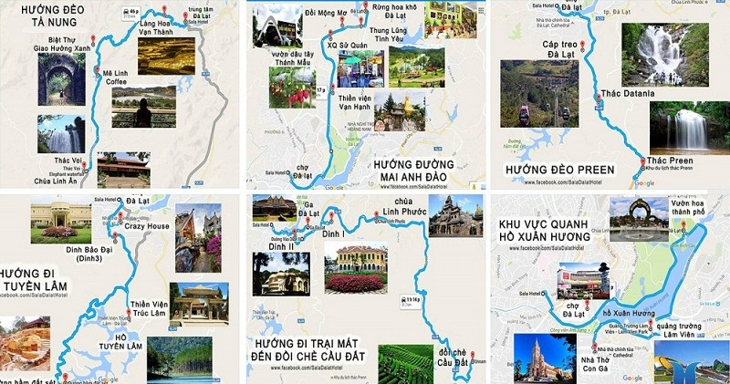

Cập nhật bản đồ du lịch Đà Lạt 2020
Bản đồ du lịch Đà Lạt 2020 chi tiết sẽ giúp quý khách định hình được phương hướng và những cung đường mình sẽ đi sao cho thuận tiện và tiết kiệm thời gian. Chỉ cần dựa theo bản đồ Đà Lạt này cùng với một chiếc xe máy, quý khách đã có thể tự mình khám phá Đà Lạt rồi. Trong bài viết này mình có cập nhật những lưu ý khi đi du lịch Đà Lạt, bạn có thể tham khảo thêm để có kinh nghiệm hơn cho chuyến du lịch sắp tới của mình.
Bản đồ Đà Lạt online Đây là bản đồ thành phố Đà Lạt online, bạn vào đây, điền địa chỉ bạn đang dừng chân và địa chỉ muốn đến. Google Maps sẽ chỉ đường và bạn cứ đi theo sẽ tới được điểm mong muốn. map Đà Lạt
Theo như bản đồ Đà Lạt, thành phố này có diện tích khoảng 394,64 km². Phía Bắc giáp với huyện Lạc Dương. Phía Đông và Đông Nam giáp huyện Đơn Dương, phía Tây giáp Lâm Hà và phía Tây Nam giáp với huyện Đức Trọng. Thành phố hành trình gồm 12 phường và 4 xã với những tuyến đường giao thông khá thuận lợi, giúp du khách khám phá nơi đây một cách dễ dàng.
Hướng ở trung tâm Đà Lạt

Quảng Trường Lâm Viên
Địa chỉ: Trần Quốc Toản, phường 1, Đà Lạt
Nếu khách du lịch Đà Lạt đang muốn ghé thăm một địa điểm gần trung tâm thành phố thì Quảng trường Lâm Viên là một gợi ý thích hợp nhất. Nơi đây nổi tiếng với 2 công trình kiến trúc "Hoa dã quỳ" và "Nụ hoa Atiso" được xem là kiệt tác của hành trình ngày nay. Sở hữu vị trí khá đẹp và nhìn ra hồ Xuân Hương nên khi đến với mảnh đất này tháng 9, du khách có thể ghé thăm điểm đến này để chiêm ngưỡng công trình khổng lồ đứng sừng sững giữa quảng trường rộng lớn. Bên trong Quảng trường Lâm Viên còn có cả trung tâm thương mại, quán cà phê, sân khấu, đài phun nước,... cho khách chuyến đi thoải mái vui chơi giải trí.
Hồ Xuân Hương
Hồ Xuân Hương từ lâu đã được xem là biểu tượng của thành phố lịch trình . Hồ Xuân Hương lôi cuốn du khách bởi khung cảnh thơ mộng, mặt nước trong veo, xung quanh là những rặng cây và thảm cỏ xanh tươi, hiền hòa. Đây cũng là nơi quy tụ những địa điểm chương trình nổi tiếng như Quảng trường Lâm Viên, vườn hoa thành phố, công viên Yersin.
Chợ Đà Lạt
Chợ vùng này là một nơi bạn nhất định phải đến khi đến với hành trình. Đây là điểm tụ hội quen thuộc của du khách thập phương, nhất là khi đêm về, quy tụ những hàng quán, quầy đặc sản, các sản phẩm thời trang bằng len và đồ lưu niệm xinh xắn.
Hướng Thung Lũng Tình Yêu – Đồi Mộng Mơ
Đi theo cung đường Mai Anh Đào này, khách lịch trình có thể bắt gặp rất điểm chương trình thú vị như Thung Lũng Tình Yêu, Rừng hoa khô Đà Lạt, Đồi Mộng Mơ, Vườn dâu tây Thánh Mẫu, XQ Sử quán… Đặc biệt hơn là những địa điểm du lịch này không hề cách xa nhau nên bạn chỉ việc lựa chọn một điểm đến trước tiên ở đây và sau đó sẽ men theo con đường này để khám phá các điểm du lịch Đà Lạt khác. Ngoài ra trên cung đường này còn quy tụ rất nhiều vườn dâu tây ngon mọng nước nổi tiếng tại mảnh đất này.
Thung lũng tình yêu
Địa chỉ: số 7, đường Mai Anh Đào, phường 8, Đà Lạt
Giá vé: 250k/vé
Thung lũng tình yêu là điểm hành trình cũng rất nổi tiếng nằm ở phường 8. Nơi đây do người Pháp xây dựng nhằm mục đích phục vụ cho giới quý tộc mảnh đất này xưa. Mặc dù có tuổi đời khá lâu, nhưng đến nay Thung lũng tình yêu vẫn là một địa điểm được nhiều khách chuyến đi yêu thích và lựa chọn ghé thăm.
Xung quanh thung lũng này là những tán thông già xanh thẫm, tạo nên một không gian mát mẻ và rất dễ chịu. Không những thế, đây còn là nơi kết tinh đầy đủ vẻ đẹp của núi rừng, sông hồ và sắc hoa rực rỡ. Ghé thăm thung lũng tình yêu, khách lịch trình sẽ được khám phá một nơi rất độc đáo, đó là Đồi thông hai mộ, nơi này gắn liền với một câu chuyện tình đẹp nhưng đẫm nước mắt của chàng sinh viên trường Võ Bị Quốc Gia Đà Lạt (nay là Học viện Lục quân Đà Lạt) và một thiếu nữ địa phương dạy văn tại trường Bùi Thị Xuân. Chính câu chuyện tình đẹp và buồn này của hai người đã khiến hồ Than Thở và Đồi thông hai mộ trở thành chứng nhân cho tình yêu tại thành phố chương trình.
Đồi mộng mơ
Địa chỉ: 05 -07 đường Mai Anh Đào, phường 8, Đà Lạt
Giá vé: 50k/người lớn - 30k/ trẻ em
Với diện tích lên tới 12ha, nằm ngay cạnh Thung lũng tình yêu huyền thoại, Đồi mộng mơ được xem là điểm du lịch Đà Lạt vô cùng hấp dẫn nằm ở phường 8. Nơi đây vừa chiêu đãi khách hành trình bằng khung cảnh rừng thông xanh mướt suốt bốn mùa vừa mở ra một bức tranh lung linh sắc màu của những bông hoa tươi thắm.
Khu du lịch đồi mộng mơ còn sở hữu một cây ước nguyện, là điểm đến lý tưởng của những đôi tình nhân khi trải nghiệm. Truyền thuyết kể rằng, khi dùng dây đỏ kết chặt lại với nhau và ném lên cây ước nguyện thì hạnh phúc sẽ mãi bền vững. Do đó mà ngày nay, khi đến đây, khách chuyến đi sẽ nhìn thấy trên cây ước nguyện này có hàng ngàn mảnh vải đỏ treo lơ lửng tạo nên một khung cảnh vô cùng diễm lệ và trữ tình. Không những thế, đến với đồi mộng mơ, khách lịch trình còn có cơ hội được tham dự lễ hội cồng chiêng đặc sắc, tìm hiểu về nét văn hóa đặc trưng của vùng đất Tây Nguyên đầy nắng và gió.
Rừng hoa khô Đà Lạt
Địa Chỉ: Số 7/1A – Mai Anh Đào – Phường 8 – Tp. Đà Lạt
Website: Fbio.com.vn
Số điện thoại: 0633.552.272
Vé vào cổng: Miễn phí
Rừng Hoa nơi này là một điểm chương trình nổi tiếng. Rừng Hoa nơi đây thành lập vào năm 2003. Một showroom hoa tươi được bảo quản theo phương pháp công nghệ Nhật Bản. Nhiều loài hoa được sấy khô. Dưới bàn tay của các nghệ nhân, nó trở thành những bức tranh độc đáo, sáng tạo.
Hướng Đèo Prenn Đà Lạt
Khi bạn lựa chọn đi theo hướng này, bạn sẽ được chiêm ngưỡng vẻ đẹp hùng vĩ, thơ mộng của 2 thác nước đẹp nhất thành phố hành trình. Đó là thác Datanla và thác Prenn. Với những ai không muốn thuê xe máy có thể lựa chọn đi cáp treo chuyến đi xuống Thiền viện trúc lâm rồi qua hồ Tuyền Lâm ngắm cảnh. Hoặc có thể đi theo đường đèo để xuống thác Datanla mảnh đất này hay Thác Prenn. Sau đó bạn có thể ghé thăm các điểm lịch trình khác gần đó.
Thác Datanla
Lôi cuốn khách chương trình với dòng nước trong veo chảy qua 7 tầng núi đá rồi dội xuống những phiến đá lớn, tung bọt trắng xóa. Cách trung tâm 5km, tọa lạc khoảng giữa đèo Prenn. Từ quốc lộ 20 rẽ xuống dốc khoảng 300m là tới một thung lũng nhỏ, khách du lịch Đà Lạt sẽ gặp thác Datanla với cảnh trí đầy hấp dẫn, hoang sơ và có chút man dại.
Thác Prenn
Nằm ngay đầu đèo Prenn, trên quốc lộ 20 từ Sài Gòn lên Ðà Lạt, cách trung tâm 10 km về hướng nam. Đến với thác Prenn của hành trình, ngoài việc chiêm ngưỡng dòng thác hùng vĩ như bản trường ca của rừng già và những đồi thông bao la, khách chuyến đi còn có dịp thưởng thức món cháo cá lóc đặc sản giá chỉ từ 160.000 – 200.000 VND cho 4 người ăn.
Hướng đồi chè Cầu Đất Đà Lạt
Dinh Bảo Đại
Thành phố chuyến đi là một vùng đất nghỉ dưỡng nên không bất ngờ khi nơi đây có đến ba ngôi biệt thự được vua Bảo Đại dựng làm nơi làm việc và nghỉ ngơi. Cả ba dinh Bảo Đại đều mang kiến trúc châu Âu nhưng nội thất vẫn giữ nét cung đình Huế truyền thống, tọa nên một vẻ đẹp độc đáo và riêng có. Nếu đi theo cung đường này, khách lịch trình sẽ được chiêm ngưỡng và tham quan 2 trong 3 dinh Bảo Đại đó.
Ga Đà Lạt
Với lối kiến trúc đậm chất Pháp, ga xe lửa nơi đây là một trong những địa điểm thu hút nhất của chương trình. Ở đây vẫn còn giữ lại các toa tàu xưa chạy bằng hơi nước và những đường ray cũ kỹ nhuốm màu thời gian. Hiện ga chỉ chạy một chuyến duy nhất, phục vụ khách du lịch từ trung tâm thành phố đến ga Trại Mát, địa điểm đã từng xuất hiện trong phim Tháng Năm rực rỡ. Giá vé: 85.000 VND/ vé khứ hồi (từ 15 khách thì xe mới chạy).
Hướng đi Suối Vàng
Langbiang
Địa chỉ: thị trấn Lạc Dương, huyện Lạc Dương, Lâm Đồng.
Người lớn: 30.000đ/vé
Trẻ em: 15.000đ/vé
Nằm cách khu trung tâm 12 km về phía Bắc. hành trình, đến chân núi Lang Biang, bạn có hai cách lựa chọn di chuyển. Một là leo núi, hai là đi xe jeep. 1 xe jeep bao trọn là 180.000 đồng, nếu đi lẻ thì phải chờ xe đủ 6 người mỗi người 50.000 đồng tiền xe, đi hết chừng 15 phút là lên đến đỉnh núi. Còn nếu khách chuyến đi chọn leo núi (đi theo đường nhựa lên đỉnh) bạn phải đi khoảng 7 – 8 km, mất 1h30′ mới lên tới đỉnh. Đường lên đỉnh núi hai bên là thông và hoa dại. Lên tới đỉnh núi là một không gian đẹp vô ngần, và bạn cũng có thể thưởng thức các món nướng tại đây.
Làng Cù Lần
Làng Cù Lần
Địa chỉ: Thôn Suối Cạn, xã Lát, huyện Lạc Dương, tỉnh Lâm Đồng, Đà Lạt
Là điểm tham quan mới của lịch trình . Một ngôi làng nhỏ bé, xinh xắn và dễ thương, có diện tích khoảng 30 héc – ta nằm giữ cánh rừng nguyên sinh tuyệt đẹp. Những cánh rừng này nằm dưới chân núi langbiang hùng vĩ thơ mộng. chương trình, bạn có thể đến và cảm nhận những trải nghiệm hấp dẫn tại đây.
Thung lũng vàng
Địa chỉ: thôn Lạt Đồng – Xã Lát thuộc Huyện Lạc Dương
Người lớn: 40k/ khách
Trẻ em: 20k/ khách
Nép mình giữa khu rừng thông đặc chủng cao từ 5-15m với mảng thực bì phong phú, đồi núi uốn nếp độc đáo, thung lũng Vàng sở hữu một khu vườn với nghệ thuật đặc sắc cùng những vườn hoa, cây cảnh đẹp. Khung cảnh thiên nhiên thích hợp cho du lịch nghỉ dưỡng. Xuất phát từ trung tâm vùng này theo hướng bắc đi Lạc Dương, đến km 7 Tùng Lâm rẽ trái, vượt qua đoạn đường dài khoảng 12km sẽ đến hồ Suối Vàng. Đường đi Suối Vàng rất đẹp, nên bạn có thể mang theo đồ ăn và bạt trải, thích chỗ nào dừng lại picnic chỗ đó luôn. Đây có thể là một trải nghiệm tuyệt vời khi đến với mảnh đất này.
Hướng đi Hồ Tuyền Lâm
Thiền viện Trúc Lâm
Địa chỉ: đường Trần Thánh Tông, tọa lạc trên đồi Phụng Hoàng, phường 3, Đà Lạt
Giá vé: miễn phí
Giờ mở cửa: 5:00 - 21:00
Cách trung tâm thành phố khoảng 5km, Thiền viện Trúc Lâm của chương trình là một trong 3 thiền viện lớn nhất Việt Nam thuộc dòng Trúc Lâm Yên Tử nên đây không chỉ là điểm đến hấp dẫn của du khách mà còn là chốn hành hương, chiêm bái của các tín đồ Phật giáo. Bao quanh là núi rừng nên Thiền Viện Trúc Lâm luôn mang một vẻ đẹp an yên và tĩnh lặng. Dù không phải là địa điểm du lịch Đà Lạt mới nhưng rất nhiều du khách vẫn thường ghé thăm nơi này để tìm kiếm sự bình yên, thanh thản trong tâm hồn. Tọa lạc trên núi Phụng Hoàng, phía trên Hồ Tuyền Lâm, Đối diện cổng thiền viện có trạm cáp treo. Khách hành trình đến đây có thể đi cáp treo chiêm ngưỡng cảnh thành phố và rừng thông (50.000 đồng/ vé khứ hồi) từ trên cao
Đường hầm đất sét
Giá vé dành cho người lớn là 40.000 VNĐ/người.
Giá vé dành cho trẻ em là 20.000 VNĐ/người.
Khi ghé thăm đường hầm đấy sét, khách chuyến đi sẽ phải trầm trồ, kinh ngạc bởi vẻ đẹp của nơi đây. Những khối đất sét vô chi vô giác không có hình hài gì cả, qua đôi bàn tay nhào nặn tài hoa của các nghệ nhân, nó đã trờ thành những kiệt tác nghệ thuật bắt mắt với những hình hài độc đáo, thu hút du khách. Tại đây còn có ngôi nhà làm bằng đất sét lớn nhất Việt Nam. Trên mái nhà còn có hình bản đồ đất nước Việt Nam rất lớn.
Hướng đèo Tà Nung Đà Lạt
Café Mê Linh
Địa chỉ: tổ 20, thôn 4, xã Tà Nung, TP. Đà Lạt
Mê Linh Coffee Garden được nhiều khách chuyến đi yêu thích và tìm đến không chỉ vì nơi đây phục vụ cà phê chồn đúng chất mà còn sở hữu tầm nhìn có một không hai ở nơi này. Mê Linh Coffee được thiết kế mở, đảm bảo cho du khách một tầm nhìn trọn vẹn toàn cảnh về mảnh đất này 360 độ. Đến đây, khách lịch trình sẽ có thể vừa thưởng thức một ly cà phê đúng chất, vừa được chiêm ngưỡng cảnh quan tuyệt đẹp của đất trời. Không chỉ là nơi dành cho những ai muốn tận hưởng không gian yên bình, Mê Linh Coffee còn là nơi dành cho các nhóm bạn trẻ “check-in”, “sống ảo”khi du lịch Đà Lạt.